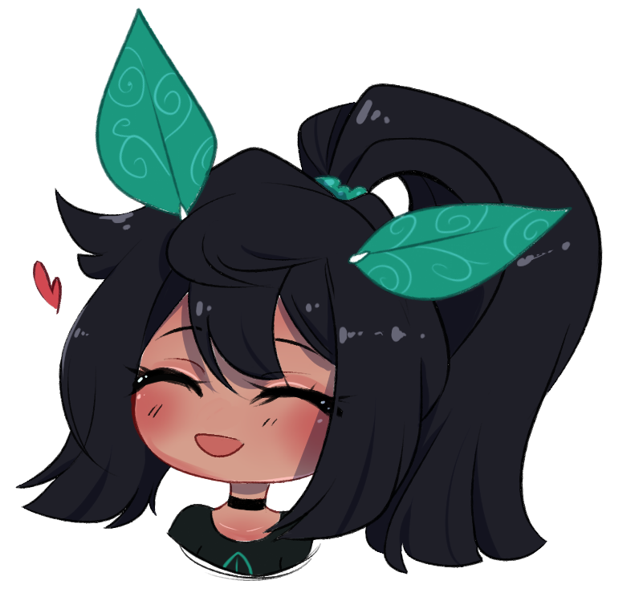

About the Artist
My name is Skylar. I’m known online as my alias ’skylacuna’ or formerly as ‘marshmerry’. I’ve been drawing since my sophomore year of high school, starting with Apple Paintbrush and a small Wacom Bamboo tablet. Nowadays, I main Clip Studio and Procreate, and I use a 9.7” iPad and a XP-PEN 22E tablet to draw with!
I draw mostly fan art of various cartoons, such as Pokemon and MLP: FiM. I also love drawing horror, like SCP and creepypasta, but I’m recognized more for my cute art nowadays. My style is on the border between Japanese anime and American cartoon,but I do love painting semi-realistically, even if I’m not very skilled at it yet.
In my free time, I like to go out biking and hiking, field sketching, and randomly driving and becoming lost in new places. I play the violin and ukulele, I have a dog named Jericho, a gecko named Bean, and about ten snakes whom I all love very much. I plan to open my own ball python breeding business in 2021. I’m currently in school for Web Development and, fun fact, I created this entire website from scratch!
If you are interested in my work, please feel free to browse the gallery pages, or get in contact with me using the form on my contact page, or by messaging me on my social media (linked below).